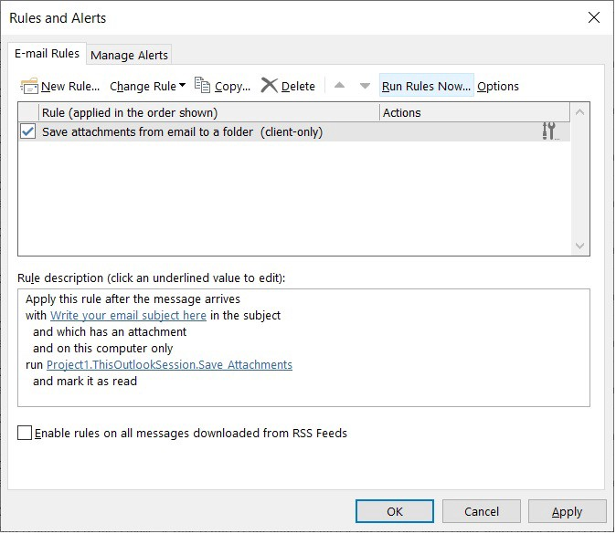
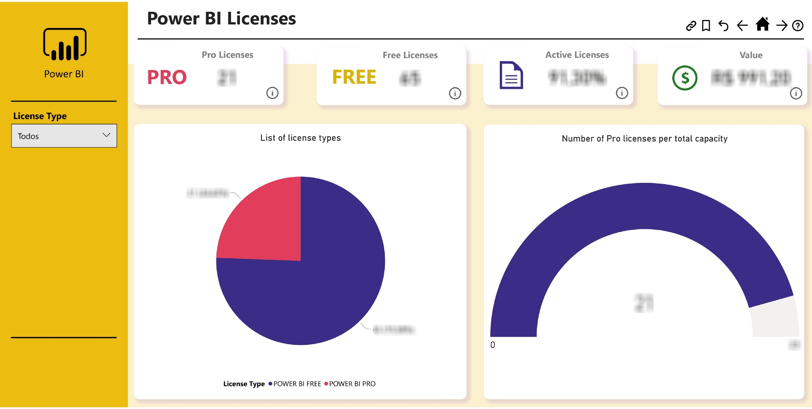

Save attachments from
e-mail to a folder with Outlook VBA

This project will be used to store the VBA scripts for Microsoft Outlook to run a macro that can save any attachments from email to a folder.
Get Power BI metadata
from Azure through PowerShell script

This project shows how you can retrieve the users and licenses from Azure from a Powershell script and save into a CSV file.
Get file metadata
from PowerShell script

In this project I will show you how to get a file’s metadata inside the Windows system using a PowerShell script.
Convert Excel file to CSV
from a PowerShell script
This project shows how to convert an Excel file using a PowerShell script.